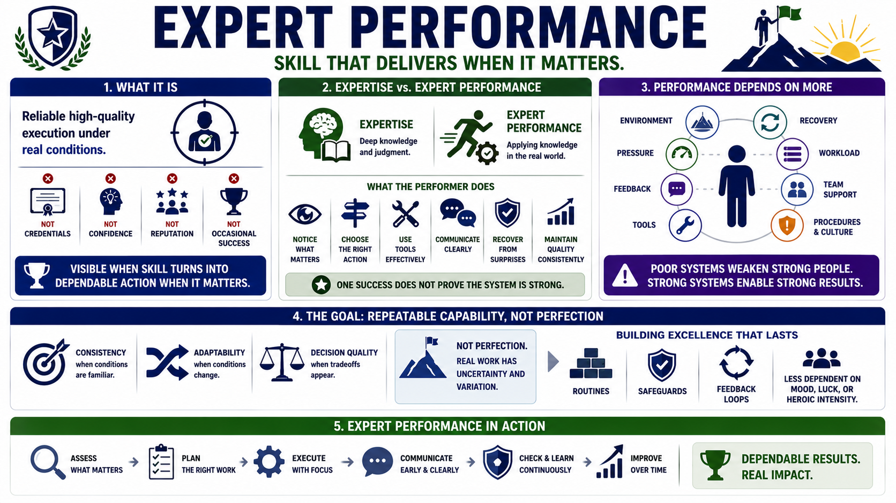

What Is Expert Performance?
Connecting to LMS... Progress: in progress

Narration
Expert performance is reliable high-quality execution under real conditions. It is not the same as credentials, confidence, reputation, or occasional success. A person may know a domain well and still struggle to perform when the situation includes time pressure, incomplete information, competing priorities, or consequences. Expert performance is visible when skill turns into dependable action when the work matters.
Expertise and expert performance overlap, but they are not identical. Expertise describes deep domain knowledge and refined judgment. Expert performance requires applying that knowledge in a real context. The performer must notice what matters, choose an appropriate action, use the available tools, communicate clearly, recover from surprises, and maintain quality without assuming that one success proves the whole system is strong.
Performance depends on more than individual ability. It is shaped by environment, pressure, feedback, tools, recovery, workload, and team support. A strong performer can be weakened by poor procedures, broken tools, fatigue, unclear priorities, or a culture that hides mistakes. Likewise, a strong system can help skilled people produce steadier results by reducing avoidable friction and making review easier.
The goal is not perfection. Real work always contains uncertainty and variation. The useful standard is repeatable capability: consistency when conditions are familiar, adaptability when conditions change, and decision quality when tradeoffs appear. Expert performers build routines, safeguards, and feedback loops around their work so excellence is less dependent on mood, luck, or heroic intensity.